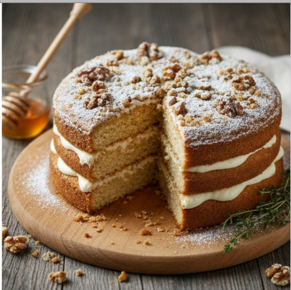

Honey Cake

Description
Honey cake is a dense, moist dessert cherished for its deep amber color and warm,
floral sweetness. Unlike a light sponge cake, it often has a tight crumb and a
sticky texture derived from a high honey content. Spices like cinnamon, cloves,
and ginger are frequently added to complement the honey, creating a complex flavor
profile that isn't just sugary.
Ingredients
- Sweetener: 1 cup high-quality honey
- Dry Ingredients: 3 cups all-purpose flour, 1 tsp baking powder, 1 tsp baking soda, 1/2 tsp salt
- Spices: 1 tsp ground cinnamon, 1/2 tsp ground ginger, 1/4 tsp ground cloves
- Wet Ingredients: 3 large eggs, 1 cup granulated sugar, 1 cup vegetable oil, 1 cup warm coffee or tea
- Flavoring: 1 tsp vanilla extract
- Optional: 1/2 cup chopped walnuts for the top
Steps
- Preheat your oven to 325°F and grease a 9-inch bundt pan or loaf pan.
- In a large bowl, whisk together the flour, baking powder, baking soda,
salt, and spices.
- In a separate bowl, beat the eggs and sugar until light and fluffy, then
slowly whisk in the oil, honey, vanilla, and warm coffee or tea until the wet
ingredients are fully integrated.
- Gradually fold the dry ingredients into the wet mixture, stirring just
until no streaks of flour remain.
- Pour the batter into the prepared pan and sprinkle walnuts on top if
desired.
- Bake for 45 to 55 minutes, or until a toothpick inserted into the center
comes out clean.
- Allow the cake to cool completely in the pan to let the honey moisture
settle.
Home